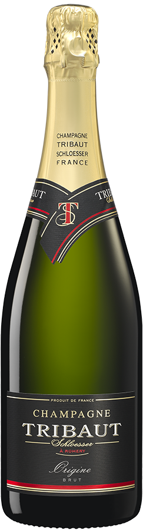

国家：法国
地区：
年份：2016
酒类：红酒
容量：750ml
酒精度：13％
年产量：20000瓶
级别：村庄级
葡萄中品：40％霞多麗，
30％莫尼耶皮諾，
30%莫尼耶皮诺
原味香槟
1000元国家：法国
地区：
勃艮第 - 桑特内这个地方酿造很多有名的葡萄酒
年份：2016
酒类：红酒
容量：750ml
酒精度：13％
年产量：20000瓶
级别：村庄级
葡萄中品：40％霞多麗，
30％莫尼耶皮諾，
30%莫尼耶皮诺
食品配搭这款传统干香槟适宜餐前饮用，任何时刻品用。配油炸小吃燒味，火鍋均可。
品评此款香槟清爽，ロ中果香浓郁怡人，散发着梨和李子的香味调配了10％的在大木桶中陈年珍藏的基酒赋予了一丝灌木味道，融合了果味和清淡却依然生动的烧烤味。这款酒余味悠长，一丝柠檬味道久久排個于口中。平衡感良好，余味悠长。酒呈浅金色气泡细腻持久。
推介理由：
1）来自香檳區8个产地，三種葡萄混合精心
釀造。
2）混合酒庄大木桶陈年基酒，布鲁塞尔国际
葡萄酒大赛（Concours Mondial de Bruxelles）
3）櫻花葡萄酒大奖（Sakura Wine Awards）
（日本）金奖
4）中国葡萄酒与烈酒大奖（China Wine ＆
Spirit Awards）（中国及香港地区）金奖
5）韩国葡萄酒与烈酒大奖（Korean Wine ＆
Spirit Awards）（韩国）金奖
6）Vyno Dienos国际葡萄酒博览会（立陶宛）
金奖
7）并获世界各大无数大奖